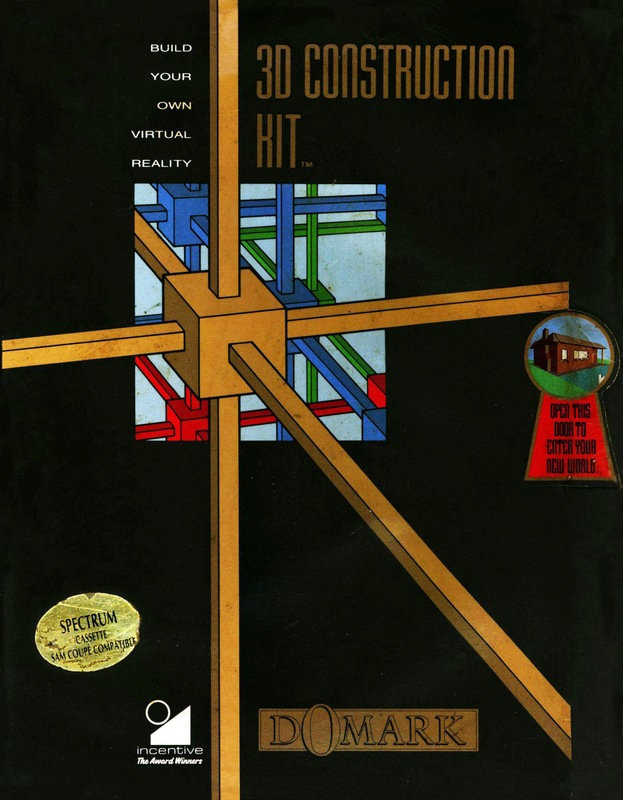
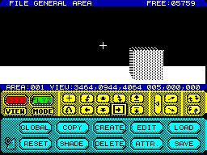

3D Construction Kit


{kind=link}

| Publisher: | Domark |
| Price: | £24.99 |
| Year: | 1991 |
| Source: | CRASH, Issue 88 |

One of the great programming innovations over the past few years has been Freescape, a system of creating a three dimensional world where the player can have total control over movement. No longer were you only able to walk around objects, you could fly above them and took down, stand below and look up — the possibilities were endless.
Incentive produced four games using Freescape: Driller (97%, Issue 47), Dark Side (95%, Issue 54), Total Eclipse (93%, Issue 60) and Castle Master (85%, Issue 76). Now they’ve gone one step further — 3D Construction Kit.
Basically, this is a utility to create your own Freescape worlds. The original games were created by typing in lists of coordinates (a very tricky business) but now it’s as easy as two key presses to put a 3D object on the screen. The kit uses pull-down menus and a pointer which are simple to use and understand.
You choose the shape you want from a list including hexagons, triangles, cubes, lines and pentagons and can then stretch, shrink, turn and shade it and position it in your world. Using this method complex buildings can be easily built up.

Creating buildings and doors to walk around is all very well but would make a very boring game. This is why a ‘conditions’ option has been included. By putting a condition on a certain object (IFSHOT THEN GOTO AREA 2, for example) you can start to make a game. In Total Eclipse, shooting blocks created stairs and in Castle Master a switch opened the drawbridge. Each part or room of the game is called an area. You can have as many areas as memory will allow.
As you can imagine, storing and calculating the movement of all the objects you put into a game can be very memory hungry and annoying when you think that many of the objects are simply repeated from area to area. Global objects can be used to save having to recreate a new situation each time. An example of this is four walls and a ceiling for a room. You can just use the global object for this as each room of your game.
Sensors can be used to make something react when the player comes near it — a monster firing at you for example. When creating remember that you’re not restricted to building on the ground. You can choose whether you want your player to fly on a jet-pack, in a plane or just walk.
Once you’ve created the world for your game you can start to concentrate on the presentation. The size of the window your player uses to see into your world can be changed. The smaller you have it the faster things will scroll by.
A normal SCREEN$ file drawn with any art utility can be incorporated to use as a border and status panel. Text and score lines to represent energy, lives, etc are a must and there’s even an option to use scrolling bars to give your game a more professional look.
Within a few minutes of loading 3D Construction Kit you will be creating worlds for pleasure or even monetary gain. The great thing about the system is that it creates stand-alone programs so you can load them without having to reload 3D Kit. Perfect for sending into CRASH Powertape!
This is an excellent game creation utility. Whether you want to create whole games for friends or models of your house to fly over, it’s simple to use and great fun.
NICK